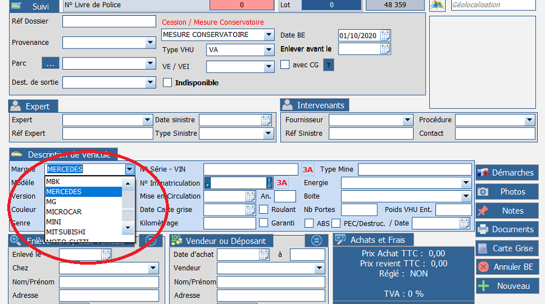
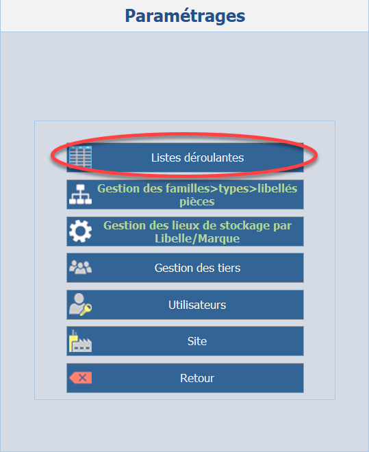
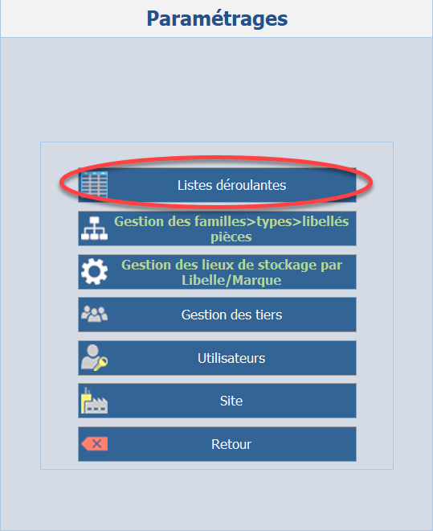
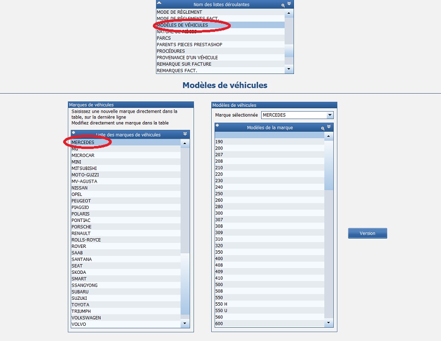

Listes déroulantes
Il est fortement conseillé de personnaliser toutes les listes déroulantes dès le début de votre utilisation du logiciel.
Cela peut paraître fastidieux mais vous gagnerez beaucoup de temps par la suite. En effet, les listes déroulantes sont présentes dans la majorité des pages du logiciel. Elles permettent de selectionner directement une information dans une liste sans devoir la retaper à chaque fois.
Par exemple, plutôt que de taper Mercedes à chaque fois, vous pourriez juste cliquer sur ce mot dans la liste.

Commencez par cliquer sur Paramétrages dans le menu principal, puis sur Listes déroulantes.
 

Cette page est plutôt simple à comprendre.
Sur la partie supérieure se situe la totalité des listes déroulantes, cliquez sur celle que vous désirez pour les personnaliser.
Pour reprendre notre exemple, nous allons cliquer sur Modèles de voitures.

Vous pouvez constater qu'il est possible d'ajouter ou supprimer des marques (pour ne garder que celles que vous traitez) mais également des modèles, qui seront associés à chaque marque.
Prenons un autre exemple : nous souhaitons ajouter le remorquage à notre liste de prestations, cliquez sur Articles et Prestations et créez une nouvelle ligne dont vous pourrez personnaliser le prix et la TVA.
Bien entendu, il y a bien d'autres listes, prenez le temps de toutes les consulter et essayez d'ajouter les élements qui correspondent à votre entreprise et à vos activités.